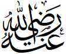

РУБРИКА 4: АРАБСКИЙ ЯЗЫК
~ Переведите на арабский язык «Мир Вам!»
~
«Ассаляму алейкум!»
|| И вам мира! – «Ваалейкум ассалям!»
~ Какое арабское имя в переводе означает «Раб Аллаха»?
~ Абдуллах || Слово Абд («раб»), используется во многих
мусульманских именах: Абдурахман («Раб Милостивого»), Абдусамад («Раб
Вечного») и т.д.
~ Переведите на арабский язык «часть», если таких частей в Коране 30.
~ Джуз
~ «Знание» на арабском – «ильм». А как будет «тот, кто знает»?
~ Алим
~ «Узун» на арабском – ухо. А как будет «слышать, оповещать»?
~ Азан || От этого же корня слово муэдзин – тот, кто дает азан.
~ Какое арабское имя в переводе означает «Верная, безопасная,
благополучная»?
~ Амина
~ Переведите на арабский язык «Город»
~ Медина
~ Переведите на арабский язык «преграда, завеса»
~ Хиджаб
~ «Сидеть» на арабском — «джаласа» , а как будет «место, где сидят»?
~ Маджлис
~ Что означает фраза «Джазакаллаху хайр»?
~ «Да воздаст тебе Аллах добром» – традиционная форма выражения
благодарности в арабском языке, являющаяся одновременно и дуа || В ответ
произносится: «уа йака» («и тебе»)
~ В русском языке они получили своё название от слова «пальма», а в
арабском — от слова «стремление». Кто они?
~ Паломники || ''Паломник'' — от слова пальма, а ''хаджий'' —
от слова хадж, что значит «стремление».
~ Переведите на арабский язык «то, что очищает»
~ Закят
~ Переведите на арабский язык «скрытый, покрытый»
~ Джаннат (Райский сад, покрытый растительностью)
~ Что такое салават?
~ Слова исспрашивания благослования на пророка Мухаммада  и семью пророка
Мухаммада , словами: «Аллахума салли аля сайидина Мухаммадин уа аля Аали
Мухаммадин уа салим»
и семью пророка
Мухаммада , словами: «Аллахума салли аля сайидина Мухаммадин уа аля Аали
Мухаммадин уа салим»
~ На арабском "амама" - значит "перед". А как на арабском будет «тот, кто
стоит впереди»?
~ Имам
~ На арабском "йамин" – значит "справа", "шималь" – "слева". Название каких
двух стран произошло от этих слов?
~ Йемен и Шам (древнее название Сирии) || Если встать
у Каабы лицом на восток (восходящее солнце), то слева будет располагаться
Шам, а справа – Йемен.
~ Переведите на арабский язык «дорога, путь»
~ Сира (путь, жизнь пророка Мухаммада ) || Также: cират
(мост), сиратуль-мустаким (прямая дорога) и т.д.
~ Переведите на арабский язык «направление»
~ Кибла
~ Что означает фраза «Радиаллаху анхум»?
~ «Да будет доволен ими Аллах» – добавляется как знак уважения при
упоминании имен сподвижников и жен пророка .
~ Почему благословенная мечеть Масджид аль-Харам («Запретная Мечеть»)
называется Запретной?
~ Её территория является запретной для греха (х-р-м – «запретный,
заповедный, священный»).
~ Какое арабское имя в переводе означает «Высокий, возвышенный»?
~ Али
~ Какое арабское имя в переводе означает «Живая, живущая»?
~ Аиша
~ Переведите на арабский язык «стремление, бег»
~ Сай || Сай — ритуальный бег между холмами Сафа и Марва. Корень с-а-й означает ''устремления'': «Уа анна са'йуху сауфа йура...» (53:40) — «его стремления будут увидены...» (53:40)
~ Переведите на арабский язык «жаркий, знойный»
~ Рамадан
~ Название какого дополнительного намаза в переводе означает «утро»?
~ Духа-намаз
~ Переведите на арабский язык «соединение, связь»
~ Никах
~ «Наср» на арабском — помощь. А как будет «помощники»?
~ Ансары
~ В каком единственном слове арабского языка сочетание ''л'' + ''а''
читается твердо (''ла''), вместо мягкого (''ля'')?
~ Имя Аллах || Также, по правилам, если перед именем стоит огласовка
''и'', то читается мягко: например, «бисмиЛлях». А если ''а''
/ ''у'' — твердо «Субхана-Ллах»
~ Переведите на арабский язык «обычай, пример, путь»
~ Сунна || Этот термин означает пример жизни пророка Мухаммада как
руководство для мусульманской общины в целом и путь для каждого
мусульманина в частности.
~ Как называются первые две буквы арабского алфавита?
~ Алиф, Ба
~ Переведите на арабский язык «забывающий»
~ Инсан (Человек) || ''наса'' - означает «забывать»
~ Какую букву арабского алфавита называют также «буквой арабского языка»,
так как она не встречается в языках других народов?
~ Буква «Даль» || (из слова дооллиин в Фатихе,
например)
~ Какие два основных слова используются в мусульманских странах для
обозначения ритуальной молитвы?
~ Салят и намаз || Тюркское «намаз» пришло с санскрита, и
переводится как «поклон». Намасте — индийское приветствие, например,
произошло от слов «намас» – поклон, «те» – к тебе.
~ Переведите на арабский язык «cамая отдалённая»
~ Аль-Акса
~ Что такое Хаджар аль-Асвад?
~ Черный камень
~ Переведите на арабский язык «черноокие»
~ Гурии
~ «Хайр» в переводе с арабского — благо. Название какой важнейшей
молитвы в жизни мусульманина означает в переводе «искать благое»?
~ Намаз истихара
~ Как называется каждая из трех огласовок (гласных) в арабском языке – а,
и, у?
~ Фатха
(а), Кясра (и), Дамма (у) || Фатха (ф-т-х
«раскрывание») – черта над буквой – звук а. Кясра (к-с-р «ломание», от него
же каср-намаз — сокращенный намаз) – черта под буквой – звук и.
Дамма (д-м-м «соединение») – запятая над буквой – звук у.
~ Переведите на арабский язык «тишина, покой»
~ Сакина || От этого же корня – огласовка сукун (с-к-н
«тишина») – кружок над буквой, обозначающий отсутствие гласной.
~ Какое арабское имя в переводе означает «Ведомый по прямому пути»?
~ Махди || худа — «вести», ихдина — «веди нас»
~ Почему половина букв арабского алфавита называются «солнечными», а другая
половина - «лунными»?
~ В слове «солнце» («аль-шамс»), артикль ''аль'' меняется на ''аш''
(читается «аш-шамс»), в то время как в слове «луна» («аль-камар»), остаётся неизменным. Поэтому все буквы, где
''аль'' меняется - называются «солнечными», остальные - «лунными».
~ Переведите на арабский язык «А затем..»
~ «Амма ба‘д» – традиционное начало основной части проповеди.
~ Имя этого выдающегося сподвижника и дяди пророка Мухаммада в переводе с
арабского означает «Лев». Кто он?
~ Хамза 
~ Переведите на арабский язык «опора», если на этой опоре держится здание
хадисов.
~ Иснад || Иснад — цепочка передатчиков хадиса.
~ Какое имя, которое носили несколько сподвижников пророка , в переводе с
арабского значит «Дар»?
~ Зейд
~ Переведите на арабский язык «Красивый / Красивая»
~ Джамиль / Джамиля || ''Джамилюн'' в переводе – красота. Это слово используется (как одно
из качеств) по отношению к Аллаху в хадисе:«Инна Ллаха Джамилюн юхиббуль Джамааля» – «Воистинну, Аллах — Красив, и любит красивое»
(Муслим, 91)
~ Что в переводе с арабского означают три частоупотребимые вопросительные
частицы – «ма», «айна», «мата»?
~ Что? Где? Когда?
~ Переведите на арабский язык «помазанный»
~ Масих || масх — тереть, мазать
~ Переведите на арабский язык «место света»
~ Минарет || от «нур» - свет. Название светильника «менора» также
проиcходит от семитского корня н-у-р.
~ Переведите на арабский язык «версия»
~ Риваят
~ Название какой исламской науки происходит от арабского слова «джавада» -
«делать правильно, как следует»?
~ Таджвид
|| Наука о правильном чтении Священного Корана.
~ Переведите на арабский язык «отдых, передышка»
~ Таравих || Молитва названа так в связи с сидением/отдыхом после
каждых четырёх ракаатов.
~ Переведите на арабский язык «часто посещать»
~ Умра || Также: «Бейт аль-Мамур» («посещаемый дом») — небесная
Кааба ангелов, расположенная на седьмом небе (мамур – амара – умра).
~ Переведите на арабский язык «близкий, этот»
~ Дунья (этот мир)
~ Переведите на арабский язык «Место, где заходит солнце»
~ Магриб
~ Переведите на арабский язык «Два моря»
~ Бахрейн || ар. «Бахр» — море. От этого корня также в языки пришло
слово «адмирал» => «Амир аль-Бахр» - «правитель на море»
~ Переведите на арабский язык «Остров»
~ Джазира || Государство Алжир получило своё название от этого корня
(Аль-Джазира).
~ Как на арабском будет «прямая дорога»?
~ Сырату ль-Мустакым || Мустакым — от ар. «кама» -
''Вставать, ставить прямо'', однокоренное словам истикама, икамат, кыямат, макам и др.
~ Как в исламе называется высшая ступень рая?
~ Фирдаус || Просить его мусульманам настоятельно рекомендуется в
хадисах. Слово происходит от той же основы, что и перешедшее во многие
языки слово парадис (рай).
~ «Аль-Адаб аль-Муфрад» — вторая по известности книга имама аль-Бухари
после «Сахиха». Чему она посвящена?
~ Хорошим манерам || Адаб — хорошие манеры, нормы приличия, правила
поведения.
~ Какое арабское женское имя в переводе означает «темная ночь»?
~ Лейла
~ Переведите на арабский язык «набожность»
~ Кунут
~ Переведите на арабский язык «путешествие»
~ Сафар || От этого же слова – «сафари»
~ К какой коранической науке относятся термины Идгам, Изхар и Ихфа?
~ Таджвид || Идгам – слияние звука «н» с последующим звуком, Изхар –
четкое произнесение «н», Ихфа – «н» приглушается и тянется на два счета.
~ Как в арабском языке звучит слово «ноль, пустота»?
~ Сыфр || От него образованы перешедшие в разные языки мира «цифра»
и «шифр». Также, название месяца Сафар, по одной из версий, восходит к нему
– путники, выходящие в этом месяце в дальнюю дорогу, как бы оставляли
поселения за собой «пустыми».
~ Переведите на арабский язык «старик»
~ Шейх || В прямом значении «старик» слово несколько раз встречается
в Коране (в суре «Йусуф»)